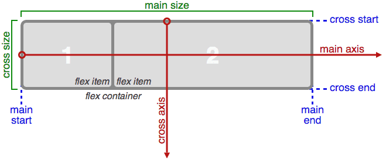
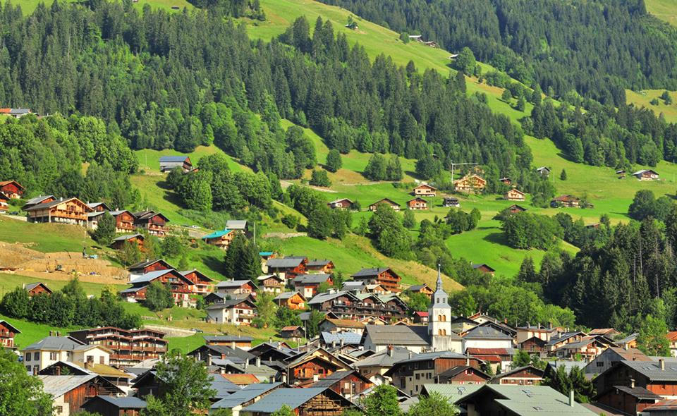
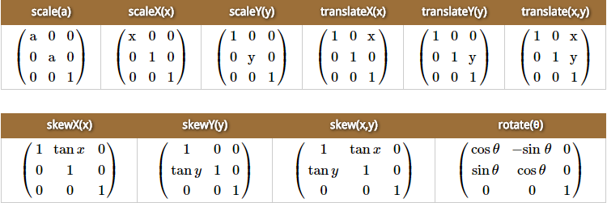
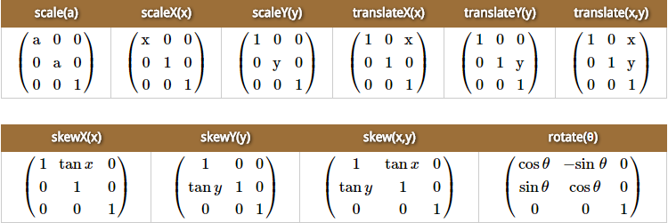
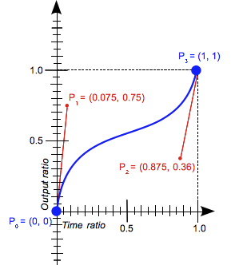
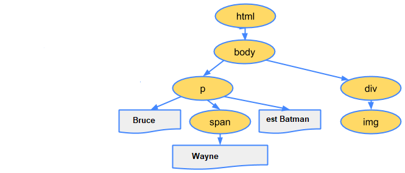
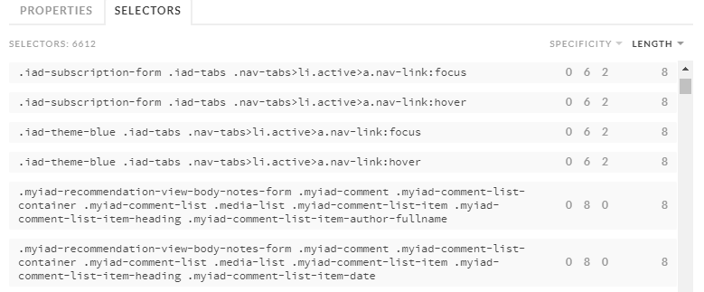

Le CSS c'est cool !
Mouad Ennaciri 13-04-2018
Hiit Consulting
Mouad Ennaciri 13-04-2018
Hiit Consulting
Roadmap
- Flexbox
- Les animations CSS
- Les performances CSS
- CSS Houdini
Flexbox introduction
Structure
- Flex container
- Flex items

Deux axes
- L'axe principal
- L'axe perpendiculaire
Flexbox model
Dans la vraie vie

Les animations CSS
- Les transformations 2D
- Les transitions
Les transformations 2D

transform: rotate(10deg);
On vit dans une matrice
 

/* transform: skewX(30deg); */
transform: matrix(1, 0, 0.57,1, 0, 0);
Les transitions
- transition-property
- transition-duration
- transition-timing-function
- transition-delay
- cubic-bezier
Du carré au cercle
/* transition-property: border-radius;
transition-duration: 1s;
transition-timing-function: cubic-bezier(.32,.11,.27,.99);
transition-delay: 100ms; */
transition: border-radius 1s cubic-bezier(0.47, 0, 0.55, 0.99) 100ms;
Les courbes de Bézier
Une courbe de Bézier cubique se définit avec 4 points : P0, P1, P2, et P3
État initial P0 (0, 0)
État final P1 (1, 1)
Les performances CSS
- DOM et CSSOM
- Imbrication des sélecteurs et profondeur
- Propriété raccourcie

DOM

Bruce Wayne est Batman


CSSOM
body { font-size: 16px }
p { font-weight: bold }
span { color: red }
p span { display: none }
img { float: right }

Imbrication des sélecteurs et profondeur

.iad-cb-create-event {
background-color: $iad-grey-200;
.iad-cb-create-event-public-type {
border: 2px solid $iad-grey-700;
.iad-cb-create-event-public-type-title {
color: $iad-blue-500;
}
}
}
.iad-cb-create-event {
background-color: #edeef2;
}
.iad-cb-create-event .iad-cb-create-event-public-type {
border: 2px solid #63697a;
}
.iad-cb-create-event .iad-cb-create-event-public-type
.iad-cb-create-event-public-type-title {
color: #5eadd5;
}
@at-root
.iad-cb-create-event {
background-color: $iad-grey-200;
.iad-cb-create-event-public-type {
border: 2px solid $iad-grey-700;
@at-root {
.iad-cb-create-event-public-type-title {
color: $iad-blue-500;
}
}
}
}
.iad-cb-create-event {
background-color: #edeef2;
}
.iad-cb-create-event .iad-cb-create-event-public-type {
border: 2px solid #63697a;
}
.iad-cb-create-event-public-type-title {
color: #5eadd5;
}
Propriété raccourcie
background: tomato;
/* background-image: initial;
background-position-x: initial;
background-position-y: initial;
background-size: initial;
background-repeat-x: initial;
background-repeat-y: initial;
background-attachment: initial;
background-origin: initial;
background-clip: initial;
background-color: tomato; */
Je ne veux pas d'image de fond qui défile, positionné à gauche et en haut... avec une couleur de fond « tomato »
CSS Houdini
- CSS Variables (Custom Properties)
- CSS Color Module

CSS Variables
:root {
--main-background-color: plum;
}
div {
background-color: var(--main-background-color);
}
div:hover {
--main-background-color: chocolate;
}
CSS Color Module
background-color: color(orange alpha(68%) saturation(49%) lightness(30%) red(173) blackness(0%))

Endgame
- Flexbox
- Les animations CSS
- Les performances CSS
- CSS Houdini